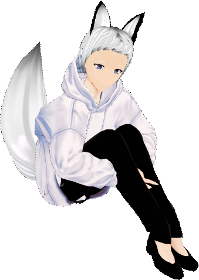
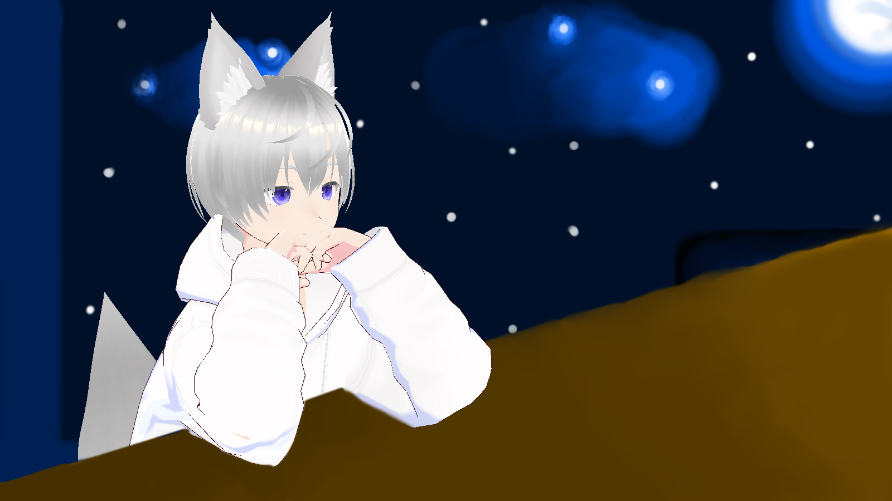
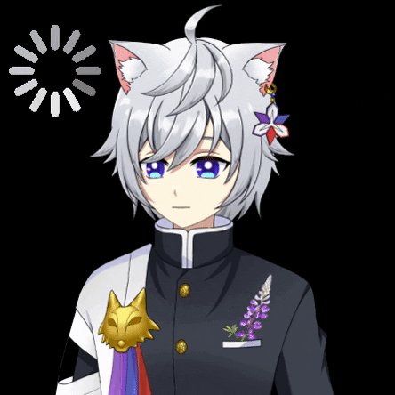

The History Model of Nishi
.png)
The first model of Nishi the Wolf is from the application Reality Avater, it's a 3D model.
The eyes of his model in this period is blue and green, different than the one he's using now.
And since Reality doesn't support tail, his first model doesn't include tails.

The second model of Nishi is from Vroid, it's another 3D model.
it's a bit ugly since the application is more for professional modelling at that time.
Since Vroid has hair modelling, the hair can use to replace his tail.
So in this model onwards, there are tails behind him.

The third model is same from Vroid, but this time,
Vroid is more developed than before and it's more user friendly.
But it's still doesn't support tail modeling at that time like today.
So the tail is still replaced by hair.

The forth model, the latest one. It's not Vroid or 3D model anymore.
It's a proper Live2D design by Kazuma
and it's draw by a Malaysian V-Artist name Koshina and
it's rigged by Malaysian VTuber Model Rigger Knights_Otis.
For this Live2D, it's design with Japanese Clothing style,
It has many meaningful design on the outfit, especially those Flowers on it.